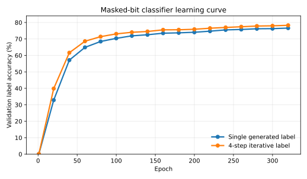
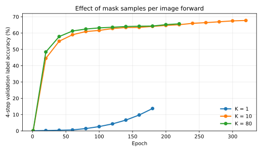
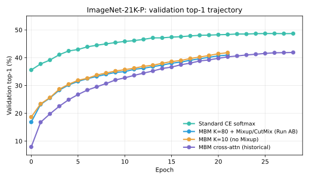
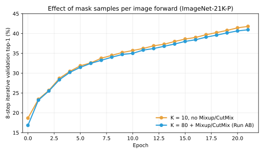

Can a Classifier Stop Paying One Logit Per Class?
Modern image classifiers almost universally terminate in a C-way logit head. This project challenges that default design. We replace the linear classifier over classes with a lightweight masked bit head that predicts a binary code for the label, reducing the output dimensionality from linear in C to logarithmic in C.
Motivation
The C-way linear classifier is one of the least questioned components in modern visual recognition. Given an image representation, the default choice is to apply a dense matrix and produce one scalar logit for every class. This design is simple, differentiable, and empirically strong; consequently, it is often treated as part of the definition of supervised classification rather than as a design choice.
From an information-theoretic perspective, however, identifying one label among C possibilities requires only log2 C bits of information. A C-dimensional logit vector is therefore not a minimal description of the prediction. For example, an ImageNet-1K label can be represented by only 10 bits, while the conventional classifier emits 1000 floating-point logits. The distinction matters when the label space grows: the conventional head scales linearly in parameters, memory bandwidth, and output activations, while the number of bits needed to specify the answer grows only logarithmically.
This project asks whether the community's default practice can be relaxed. Instead of learning a direct map from visual features to C logits, we learn a map from visual features to the bits of the class identity. The resulting classifier is not intended to remove all costs associated with large label spaces; the representation still has to separate many visual categories. The narrower claim is that the final prediction head need not allocate one output channel per class.
Related Work
Discrete visual tokens and masked generation
Discrete visual representation learning provides the closest technical context. VQ-VAE [2] introduced learned discrete latent codes; VQGAN [3] combined a convolutional tokenizer with a transformer prior for high-resolution synthesis; MaskGIT [4] replaced left-to-right token generation with iterative masked token prediction. These methods are generative rather than discriminative, but they expose the same output-space issue: a categorical head over a large discrete vocabulary scales with the vocabulary size.
Recent image generation work has explored alternatives to ordinary large-vocabulary token prediction. MAR [5] removes vector quantization and models continuous visual tokens using a diffusion loss conditioned on an autoregressive context. BAR [6] takes a complementary path: it keeps discrete tokens, but replaces the large token softmax with masked bit modeling. BAR shows that large codebooks can be made practical by predicting the binary representation of a token rather than scoring every codebook entry. Our method can be viewed as a discriminative analogue of this direction: the object to be generated is not an image token, but the discrete class identifier.
Large-class classification
Large-class recognition is often studied through pretraining rather than as an endpoint task. Big Transfer [7], ViT [8], and ImageNet-21K Pretraining for the Masses [9] show that large supervised taxonomies produce transferable representations. Ridnik et al. [9] analyze why direct classification on such taxonomies is difficult, including single-label ambiguity, multi-label complexity, and hierarchy-aware semantic softmax. Differentiable Top-k Classification Learning [10] optimizes ranking metrics directly on ImageNet-scale label spaces. These works improve objectives or label semantics, but the output layer remains tied to the number of classes.
Method
Label encoding and diffusion head
Let y in {0, ..., C - 1} denote the class index. We encode the class as an LSB-first binary vector b(y) in {0,1}B, where
The backbone first maps the image to a visual representation. The masked bit head is intentionally lightweight: each bit position receives one of three tokens, 0, 1, or MASK. A learned bit-token embedding is concatenated with the image CLS feature and passed through a two-layer GELU MLP, producing two logits per bit. More expressive designs are possible, including cross-attention from bit queries to image patch tokens, but the naive MLP head was surprisingly strong and gave the best accuracy-compute tradeoff.
Training objective
Training follows the standard masked diffusion pattern, but the object being diffused is the class-bit vector rather than an image. For each training example, we sample a binary mask, replace the hidden bit positions by MASK tokens, and train a network ftheta to reconstruct the original bits:
The cross-entropy is evaluated on the masked positions. This objective is deliberately close to masked image generation losses: the model sees a partially observed discrete object and predicts the missing entries. The difference is that the discrete object has only B bits, so the reconstruction head is small.
Inference
At inference time, the lowest-cost classifier starts from an all-MASK bit sequence and predicts every bit once. We also evaluate a 4-step confidence decoder: at each step the head predicts all currently masked positions, and the most confident subset is fixed before the next step. This is the discriminative analogue of iterative masked generation.
We also evaluate an explicit class-code scorer. It enumerates legal class codes, reveals bits sequentially, and accumulates log probabilities along each reveal path. This gives a real top-k ranking over valid classes, but it is no longer the logarithmic-cost operating point: with P one-bit reveal paths, the scorer makes P log2C passes over C candidate codes.
Efficient multi-mask training
Diffusion-style training is often slower than ordinary classification because the model must learn many mask patterns. We exploit the fact that the image encoder is much more expensive than the bit head: for each image, the backbone is run once, the CLS feature is repeated across K independently sampled bit masks, and only the lightweight head is evaluated K times.
This produces many masked-bit training samples while adding little memory pressure relative to another full image forward pass. In the final configuration, K = 80. The ablation below shows that increasing the number of mask samples per image forward substantially accelerates early learning.
Mixup and CutMix supervision
Mixup and CutMix produce soft labels. Collapsing those labels by argmax creates a mixed image with a single hard bit target, which is especially noisy for a bit-level objective. In the final recipe we use soft_top2: for each image we create K masked-bit samples, take the top two soft-label classes, and split the K samples between their bit codes in proportion to the mix weight. With K = 80 and a 50/50 CutMix sample, 40 masked-bit samples train toward one class and 40 toward the other.
Experimental Setup
On ImageNet-1K we trained DeiT-B variants with a masked bit head for 330 epochs, batch size 1024, AdamW, learning rate 5e-4, weight decay 0.02, stochastic depth 0.05, and no CE shortcut or backbone warm-start. DeiT-B [1] is our conventional supervised ViT baseline; the experimental variable is the terminal classifier head. The best masked-bit configuration used K=80, uniform mask ratios, low augmentation, mixup alpha 0.8, CutMix alpha 1.0, switch probability 0.5, and soft_top2 label allocation.
For ImageNet-1K inference, we evaluate both generated-label decoding and explicit scoring of all 1000 legal class codes on the full 50,000-image validation set. The strongest explicit scorer uses 20 random one-bit reveal paths and aggregates them by mean rank.
On ImageNet-21K-P we use the processed winter21 split (10,450 classes) [9] and encode class ids as 14-bit LSB-first vectors. The masked-bit DeiT-B was trained at batch size 1024 on 8 GPUs with the same head and optimizer settings as the ImageNet-1K recipe: K=80, soft_top2 supervision, AdamW (b2=0.95, lr 5e-4, wd 0.02), label smoothing 0.1, stochastic depth 0.05, mixup α=0.8, CutMix α=1.0, switch probability 0.5, and low augmentation. A C-way softmax baseline used the same initialization, data, and nominal 30-epoch budget.
Validation is on the 522,000-image ImageNet-21K-P validation set. We report 16-step iterative bit decoding and explicit class-code scoring with 1, 5, and 20 one-bit LSB reveal paths under rank-mean aggregation. The 1-path scoring run covers about 38,000 validation images; the 5- and 20-path runs use ~1,400 and ~360-image prefixes because each path scores 10,450 candidate codes. Preemption truncated the masked-bit run at epoch 21 and the softmax baseline at epoch 28; the reported checkpoints are from those endpoints.
A note on metrics. Top-1 is standard single-prediction accuracy. Top-5 means that the ground-truth class appears among the five highest-ranked legal class codes. For softmax models, the ranking comes from class logits; for our explicit scorer, it comes from path scores or mean rank across reveal paths. Generated-label decoding emits one label, so top-5 is not applicable to that mode.
Main Results
ImageNet-1K
| Method | Classes | Head output | Inference cost | Top-1 | Top-5 | Comment |
|---|---|---|---|---|---|---|
| CoCa finetuned [11] | 1,000 | 1,000 floats | 1 softmax pass | 91.0 | not reported | SOTA |
| DeiT-B [1] | 1,000 | 1,000 floats | 1 softmax pass | 81.8 | 95.6 | baseline |
| Ours: generated-label decode | 1,000 | 10 bits | 4 bit-head passes | 78.34 | n/a | low-cost |
| Ours: explicit class-code scoring | 1,000 | 10 bits | 200 passes over 1,000 codes | 78.87 | 92.73 | scored |
ImageNet-21K-P
| Method | Classes | Head output | Inference cost | Top-1 | Top-5 | Comment |
|---|---|---|---|---|---|---|
| Ridnik et al., TResNet-L single-label [9] | 11,221 | 11,221 floats | 1 softmax pass | 45.5 | 75.6 | published |
| Differentiable Top-k, DiffSortNets [10] | 11,221 | 11,221 floats | 1 softmax pass | 40.22 | 70.88 | top-k loss |
| Ours: DeiT-B, C-way softmax | 10,450 | 10,450 floats | 1 softmax pass | 48.45 | 78.76 | our baseline |
| Ours: masked-bit head, iterative decode | 10,450 | 14 bits | 16 bit-head passes | 44.11 | 49.75 | low-cost |
| Ours: masked-bit head, 1-path class scoring | 10,450 | 14 bits | 14 passes over 10,450 codes | 44.45 | 73.13 | 1 path |
| Ours: masked-bit head, 5-path rankmean scoring | 10,450 | 14 bits | 70 passes over 10,450 codes | 42.50 | 74.65 | 5 paths |
| Ours: masked-bit head, 20-path rankmean scoring | 10,450 | 14 bits | 280 passes over 10,450 codes | 43.06 | 74.44 | 20 paths |
Ablations
The first part of this section presents ablations on ImageNet-1K; an ImageNet-21K-P trajectory and K ablation follow at the end.
Training curve

Number of mask samples per image forward

The throughput logs support the same interpretation. On ImageNet-1K v6e-8 runs, the C-way softmax run has median throughput 3.36 steps/s, while the final K=80 masked-bit run has median throughput 4.13 steps/s, measured after warmup and excluding eval/checkpoint stalls. Despite recipe differences, repeating the lightweight bit head 80 times is not the dominant forward bottleneck; the shared image encoder remains the expensive part.
Ablation on augmentation usage
| Matched epoch | Low augmentation, K=80 | Full augmentation, K=80 | Gap |
|---|---|---|---|
| 99 | 70.380 / 73.076 | 57.724 / 62.532 | +12.656 / +10.544 |
| 119 | 71.886 / 74.052 | 60.146 / 64.446 | +11.740 / +9.606 |
| 139 | 72.550 / 74.542 | 62.192 / 66.086 | +10.358 / +8.456 |
| 159 | 73.496 / 75.538 | 63.456 / 67.114 | +10.040 / +8.424 |
| 199 | 74.064 / 75.886 | 65.262 / 68.472 | +8.802 / +7.414 |
Inference-budget ablation
| Inference mode | Cost after image encoding | Top-1 | Top-5 | Takeaway |
|---|---|---|---|---|
| Greedy all-mask generated label | 1 head pass | 76.57 | n/a | fastest |
| 4-step confidence generated label | 4 head passes | 78.34 | n/a | low-cost best |
| All-mask explicit class scoring | 1C scoring pass | 76.58 | 80.17 | weak ranking |
| 4-chunk LSB class scoring | 4C scoring passes | 78.80 | 89.64 | path helps |
| 10-step LSB class scoring | 10C scoring passes | 78.82 | 92.11 | granularity helps |
| 5-path logmeanexp scoring | 50C scoring passes | 78.91 | 92.37 | best top-1 |
| 20-random-path rankmean scoring | 200C scoring passes | 78.87 | 92.73 | best top-5 |
ImageNet-21K-P training trajectory

ImageNet-21K-P: mask samples per image forward

Future Directions
The same principle can extend beyond image classification. Semantic segmentation is a natural example: instead of predicting an independent cross-entropy distribution at every pixel, one could represent the segmentation mask as a discrete object and generate it with a diffusion-style decoder, making spatial consistency part of the output process rather than only a byproduct of the backbone.
Another direction is to replace ordinary binary class ids with learned or hierarchy-aware codes. Such codes could make nearby bit strings correspond to semantically nearby classes, reduce the cost of bit errors, and connect the logarithmic head more directly to the taxonomy of large recognition datasets.
Limitations
The masked-bit head is class-efficient, but it loses some conveniences of a standard logit head. A softmax classifier directly produces a normalized distribution over all classes. Our decoder instead produces one or several class codes. As a result, computing calibrated per-class probabilities is not immediate; it requires either additional scoring over candidate codes or an expensive pass over all valid class codes.
The binary code itself is also a modeling choice. We encode class ids as ordinary binary integers, so nearby codes are not necessarily semantically related and high-order bit errors can move predictions to unrelated classes. When C is not a power of two, some bit strings are also invalid labels. On ImageNet-21K-P, 36% of the 214 bit patterns are invalid, versus 2.3% on ImageNet-1K, although the 16-step iterative decoder produced no invalid codes on validation, suggesting that the model learns to avoid the invalid region.
Finally, there is a tradeoff between logarithmic-cost decoding and top-k evaluation. Generated-label decoding preserves the intended low-cost inference path, but it does not rank every class. Explicit class-code scoring produces a standard top-k list over legal classes, but its cost scales with C because every candidate code is scored.
Discussion
The principal positive result is that a classifier can learn a nontrivial visual decision rule without a C-way logit head. The masked-bit head reaches 78.34% low-cost generated-label accuracy on ImageNet-1K, and explicit class-code scoring improves the same checkpoint to 78.87% top-1 and 92.73% top-5 at the 20-path rankmean operating point. The best explicit-scoring top-1 is 78.91% with 5-path logmeanexp. On ImageNet-21K-P, one-path explicit scoring reaches 44.45% top-1 and 73.13% top-5, while 5-path rankmean scoring reaches 74.65% top-5; the nominal same-budget softmax baseline lands at 48.45% / 78.76%. This is a feasibility result for class-efficient output heads: 20 predicted output channels on ImageNet-1K and 28 on ImageNet-21K-P, rather than 1000 or 10,450.
The main limitation is that bit-factorized prediction is not yet a drop-in accuracy replacement for softmax classification. Accuracy remains below conventional classifiers, especially on ImageNet-1K. Some of this gap may be attributable to the unresolved DeiT reproduction gap in our codebase, but the ablations also indicate genuine modeling challenges.
The masking protocol is central to the method. Correcting mixup/CutMix supervision, increasing the number of mask samples K, and using iterative decoding changed the method from a near-random baseline into a 76-78% ImageNet-1K classifier. This is consistent with BAR: masked bit prediction works only when training masks and inference schedules are treated as first-class design choices.
The inference sweep clarifies where the method is strong. Extra scoring compute gives a large top-5 improvement, from 80.17% under all-mask class scoring to 92.73% under 20 random one-bit paths. Top-1 improves much less, from 78.34% low-cost iterative decoding to 78.91% under the best explicit scorer. The same pattern appears on ImageNet-21K-P: switching from 16-step iterative decoding to one-path explicit scoring raises top-5 from 49.75% to 73.13%, closing most of the gap to the 78.76% softmax baseline. Five paths improve top-5 to 74.65%, but reduce top-1 from 44.45% to 42.50%. This tradeoff is much smaller on ImageNet-1K, likely because the label space is smaller and the training budget is much longer.
References
- [1] H. Touvron et al. Training Data-Efficient Image Transformers and Distillation through Attention. ICML, 2021.
- [2] A. van den Oord, O. Vinyals, and K. Kavukcuoglu. Neural Discrete Representation Learning. NeurIPS, 2017.
- [3] P. Esser, R. Rombach, and B. Ommer. Taming Transformers for High-Resolution Image Synthesis. CVPR, 2021.
- [4] H. Chang et al. MaskGIT: Masked Generative Image Transformer. CVPR, 2022.
- [5] T. Li, Y. Tian, H. Li, M. Deng, and K. He. Autoregressive Image Generation without Vector Quantization. NeurIPS, 2024.
- [6] Q. Yu et al. Autoregressive Image Generation with Masked Bit Modeling. arXiv, 2026.
- [7] A. Kolesnikov et al. Big Transfer: General Visual Representation Learning. ECCV, 2020.
- [8] A. Dosovitskiy et al. An Image is Worth 16x16 Words: Transformers for Image Recognition at Scale. ICLR, 2021.
- [9] T. Ridnik et al. ImageNet-21K Pretraining for the Masses. NeurIPS Datasets and Benchmarks, 2021.
- [10] F. Petersen et al. Differentiable Top-k Classification Learning. ICML, 2022.
- [11] J. Yu et al. CoCa: Contrastive Captioners are Image-Text Foundation Models. TMLR, 2022.